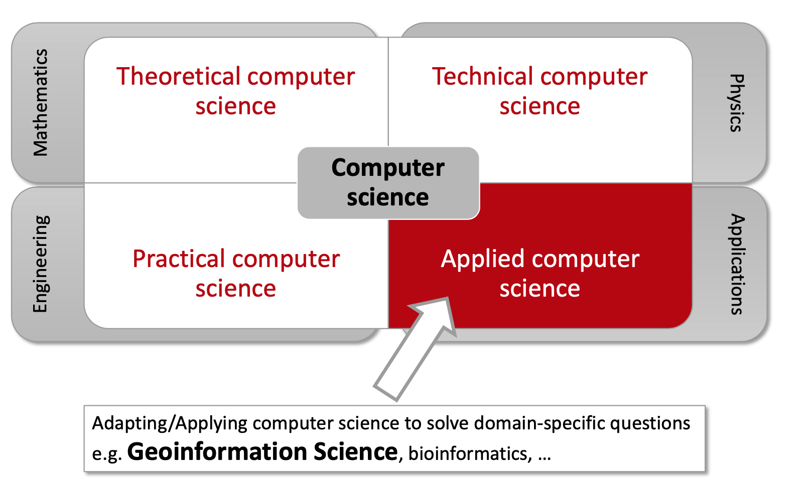
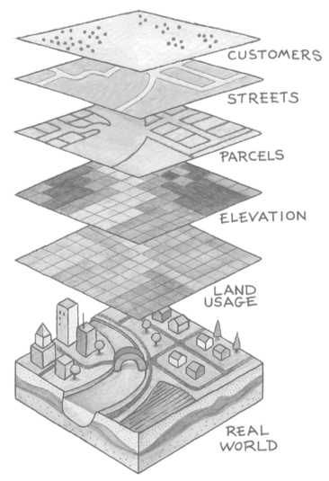
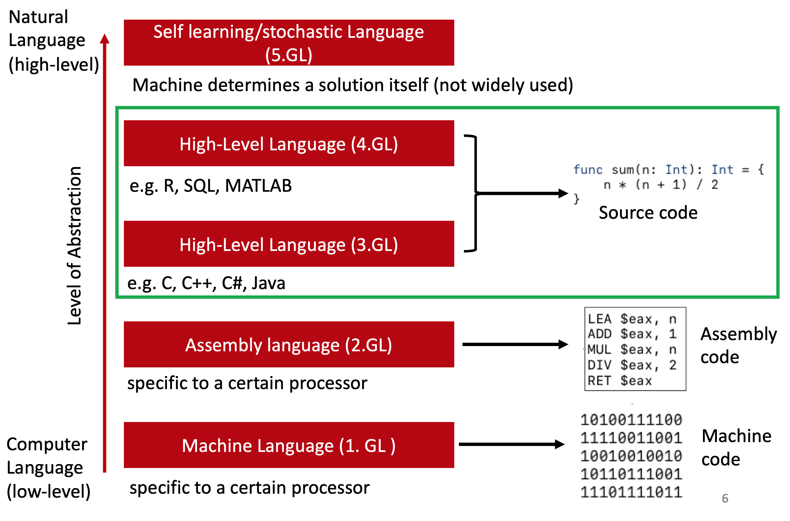
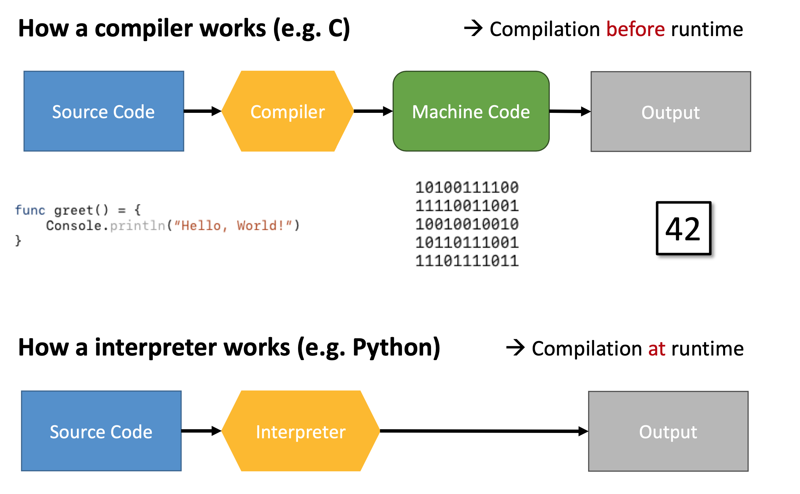

slides¶
Introduction to Advanced Geoscripting
Heidelberg University | Institute of Geography | August 10th 2020
Christina Ludwig
Agenda
- Learning goals
- The task of a Geo Information Scientist
- Abstraction hierarchies in geography and computers
- Practical: Assignment
Learning Goals
- Use object oriented programming to represent a geographic concepts in Python.
- Use context managers to read vector and raster data in Python.
- Use rasterio for raster data processing.
- Use fiona, shapely and geopandas for vector data processing.
- Compare different Python classes for vector data prepresentation in regard to readability and execution time.
- Explain the difference in execution time between different vector data structures.
- Summarize the advantages and disadvantages of compiled and interpreted languages.
The task of a Geo-Information Scientist
Build three groups:
- Geographer
- Geo-Information Scientist
- Computer Scientist
Discuss in groups:
- How do you define the task of a {X}?
- What does {X} have in common with the others, what are the differences?
Subdisciplines of computer science
Geography - GIS - Computer Science
Quantitative Geography: Using GIS to learn about the world .
Geoinformatics: Studying geographic methods, data structures, etc.
Computer Science: Focusing on methods, data structures, etc.
Abstraction in Geography
How can geographic concepts and objects be represented in a computer?
Which degree of abstraction is suitable or necessary for the analysis?
Are points, lines and polygons always suitable representations? (e.g. forest)
→ Trade off between Abstraction and execution time.
Abstraction in Computer Science
Compilation vs. Interpretation
What are the differences between compilers and interpreters in regard to the following aspects?
- Execution time (fast - slow)
- Syntax (simple - complex)
- Typing (dynamic - static)
- Memory management (manual - automatic)
- Degree of Abstraction (closer to natural language or machine language)
Compilation vs. Interpretation
Python | C |
|---|---|
|
|
Practical: Assignment
See course webpage for access to the assignment!
We will meet back here at 2 pm.
Help each other, use pair programming.
If you cannot find the answer collect them as an issue on GitHub!
Compilation vs. Interpretation
Discuss in groups:
What are the advantages and disadvantages of compiled and interpreted languages?
Summary
- There is usually a trade off between programming time and execution time.
- Programming time is more expensive than execution time. That's why Python is so popular.
- In 99% of the time you don't need to worry about execution time, because Python optimizes a lot internally.
- When you run Python code, a lot of it is actually happening in C.
- Be aware of the the trap of premature optimization.
- Start simple, optimize only when necessary.